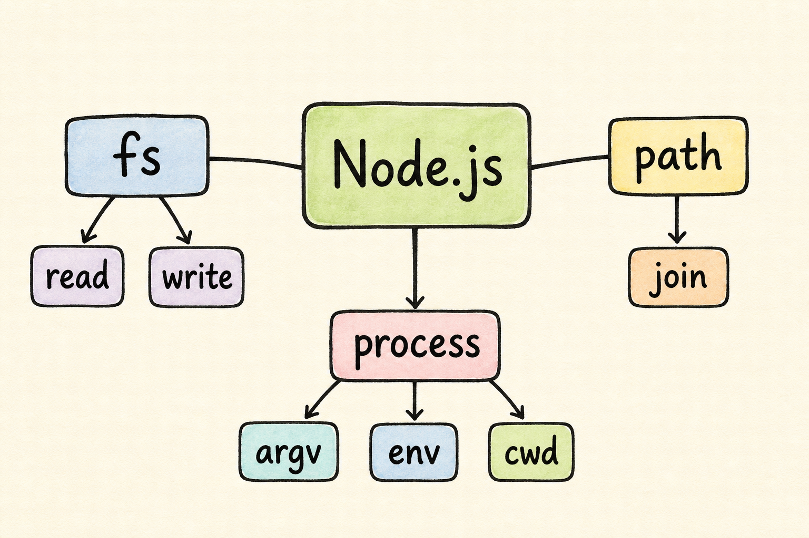

第 5 课：Node.js 核心模块
前面你已经知道 Node.js 能运行 JavaScript。现在加一层：Node.js 还自带很多核心模块，让 JavaScript 可以读写文件、处理路径、读取当前进程信息。

fs 管文件，path 管路径，process 管当前程序信息。一、真实场景
后端和 CLI 工具经常要做这些事：
保存配置
把用户设置写入一个文件。
读取路径
找到当前项目里的某个文件。
读取参数
知道用户在终端里输入了什么。
这些事都不需要先安装 npm 包，Node.js 自己就提供了入口。
本课胜利条件：你能用 fs 写入并读取文件，用 path 拼路径，用 process 查看当前运行位置。
二、三个核心模块
Node.js 官方 API 文档把这些能力作为内置模块提供。现代写法推荐用 node: 前缀，让读代码的人一眼知道这是 Node.js 自带模块。
| 模块 | 负责什么 | 这一课用到 |
|---|---|---|
node:fs | 文件系统 | 写文件、读文件 |
node:path | 路径处理 | 把目录名和文件名拼成路径 |
node:process | 当前 Node.js 进程 | 读取当前工作目录 |
三、复制粘贴练习
这节课继续使用 ES Module，所以 package.json 里写 "type": "module"。
1. 创建目录
mkdir core-modules-lab
cd core-modules-lab2. 创建 package.json
{
"name": "core-modules-lab",
"version": "1.0.0",
"private": true,
"type": "module",
"scripts": {
"dev": "node app.js"
}
}3. 创建 app.js
import { writeFileSync, readFileSync } from "node:fs";
import { join } from "node:path";
import process from "node:process";
const filePath = join(process.cwd(), "message.txt");
writeFileSync(filePath, "Hello core modules");
const text = readFileSync(filePath, "utf8");
console.log("current folder:", process.cwd());
console.log("file path:", filePath);
console.log("file text:", text);4. 运行
npm run dev你会看到类似输出：
current folder: /你的路径/core-modules-lab
file path: /你的路径/core-modules-lab/message.txt
file text: Hello core modules同时，目录里会多出一个 message.txt 文件。
四、逐行理解
导入工具
import ... from "node:fs" 表示从 Node.js 自带的文件系统模块拿工具。
拼出路径
join(process.cwd(), "message.txt") 表示把当前目录和文件名拼成完整路径。
写入文件
writeFileSync 会把文字写入文件。这里先用同步版本，便于观察。
读取文件
readFileSync(filePath, "utf8") 会把文件内容按文本读回来。
边界提醒：真实后端服务里，大量文件操作通常会优先考虑异步 API。这节课先用同步 API，是为了让零基础练习更容易看清执行顺序。
五、即时练习
题 1：哪个模块负责读写文件？
题 2：哪个函数适合把目录和文件名拼成路径？
回忆练习：用 3-5 句话解释：这个程序怎样创建并读取 message.txt？
六、课后小任务
只改一行，把：
writeFileSync(filePath, "Hello core modules");改成：
writeFileSync(filePath, "I can use Node.js core modules");重新运行 npm run dev。如果最后一行输出变了，说明你已经完成了“写文件 → 读文件 → 打印内容”的闭环。
如果卡住，把 app.js 和终端输出发给我，我会帮你判断是模块导入、路径还是文件读写的问题。
主要来源
本课参考 Node.js File system 文档 对 node:fs 的说明，Node.js Path 文档 对 path.join() 的说明，以及 Node.js Process 文档 对 process 当前进程信息的说明。